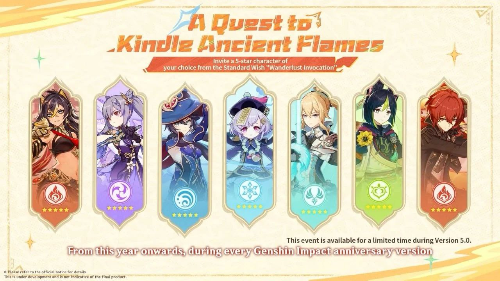

Найсвіжіші новини

Цікаве про Снігову
Снігова в Genshin Impact – одне з найочікуваніших королівств Тейвата. Відомо про Кріо регіон вже досить багато, незважаючи на те, що досі у грі не було показано жодного кадру з цієї галузі. Країна, загорнута снігом, є батьківщиною одного з персонажів, і Мандрівник часто бореться із вихідцями із суворого королівства.
У статті зібрали всю інформацію про Сніжну: коли чекати на реліз Кріо регіону, на якій культурі він заснований, хто з героїв пов'язаний з організаціями з країни і що ще відомо про королівство.

НОВИЙ ПЕСРОНАЖ
Шилонен давно славиться у Натлані як майстер ковальської справи.
Люди захоплюються її роботою і приїжджають до Шилонен з усіх куточків країни. Одні справді замовляють у неї зброю, тоді як іншим просто хочеться подивитися на знамениту майстриню, щоб потім було про що поговорити.
Втім, для Шилонен не має значення, що привело відвідувачів до її кузні. Скільки б дивних титулів їй не давали, хоч би скільки дифірамбів співали, вона насамперед коваль. А коваль має взяти руду, розплавити її у вогні та викувати саме той виріб, який потрібний клієнту.
Порожня слава не надає тяжкості ударам молота, а наклеп не гасить вогонь у ковальській печі.

НОВА МЕХАНІКА НАТЛАНУ
Завріани - істоти, що нагадують динозаврів. Раніше вважалося, що завріани – це дракони, але це не так. Дракони існували задовго до людства в Тейваті і володіли всіма елементами, поки не з'явилася Селестія і не поневолила істот, відібравши в них силу. Завриано лише подобу древніх елементальних драконів.
Зараз ящери є вірними супутниками мешканців Натлана, допомагаючи їм у побуті та глибоко прив'язуючись до них. Однак називати завріанів вихованцями людей — блюзнірство, адже у них можуть бути свої сім'ї та житла, а натланці глибоко поважають цих тварин, але не поневолюють. Але так було не завжди, і досі є ті, хто вважає завріанів проклятими і навіть платить людям, які вбиватимуть їх.
Крім того, існує безліч видів завріанів. Наразі представлено три ігрові види: тепетлізавр, юмказавр та кохолозавр.

БЕЗКОШТОВНИЙ 5* ПЕРСОНАЖ
Гравці Genshin Impact зможуть безкоштовно отримати персонажа з Natlan у версії 5.0
Вже 28 серпня гравці безкоштовно зможуть отримати 5 зіркового персонажа зі стандартного баннеру. На честь четвертої річниці гри розробники вирішили порадувати своїх гравців і навіть новачки зможуть легко вибрати персонажа. До вибору доступні: Ке Цин, Ділюк, Тігнарі, Ці ци, Джин, Дехья, Мона. Відтепер таку акцію розробники проводитимуть щороку!

Оновлення 5.1 для Genshin Impact вийшло без повного озвучення через страйк акторів
Версія 5.1 для популярної онлайн-ігри Genshin Impact була випущена без повного озвучення англійською мовою. Це пов'язано із страйком акторів проти звукозаписної студії у США.
Самі розробники наголосили на цьому у списку змін 5.1, пояснивши, що проблеми пов'язані з «організацією запису». HoYoverse вибачилася перед гравцями за незручності.
Йдеться про англомовні репліки Качини, а також деяких інших персонажів, яких не встигли записати до страйку. Іншими мовами новий контент озвучений у повному обсязі.

У Genshin Impact запустили івент з примогемами та розіграшем івентових круток
Святкування четвертої річниці гри у самому розпалі. На додаток до вже виданих подарунків на ігрову пошту та події форуму з головним призом у вигляді підписки на Благословення порожнього місяця розробники Genshin Impact запустили новий веб-івент, у якому можуть взяти участь усі бажаючі, щоб забрати подарунок у вигляді каменів витоку та приєднатися до розіграшу 10 Переплітаються доль.
Під час святкового івенту, який триватиме з 5 по 12 жовтня 2024 року, завантажте будь-яке зображення на сторінку події, виберіть рамку, що сподобалася, і створіть особливий аватар.

НОВА МЕХАНІКА
13 березня 2024 року вийде оновлення 4.5 для Genshin Impact, яке додасть у гру новий банер - "Молитва хронік". Він є тимчасовим, тому через деякий час зникне або буде замінений на інший. Однак він має свої особливості, які відрізняють його від стандартних ігрових банерів. Про них ми розповімо в нашому керівництві.